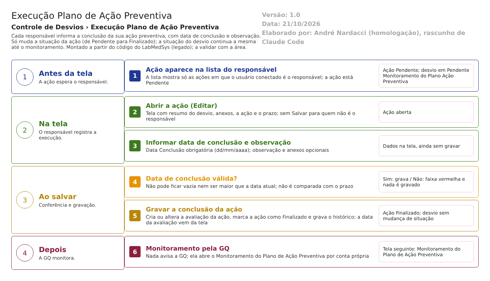

Resumo da tela
Execução Plano de Ação Preventiva
Caminho no menu: Controle de Desvios › Execução Plano de Ação Preventiva. No roteiro de menu do fornecedor o nome original era "Avaliação Plano de Ação Preventiva" (Hsolutions.GQ.DB/dml.sql:124), trocado depois (dml.sql:424).
Para que serve: cada responsável por uma ação do plano preventivo informa aqui que a executou, com a data de conclusão e uma observação. A tela trabalha ação por ação, não desvio por desvio.
Quem usa: quem foi escolhido como responsável de uma ação no Plano de Ação Preventiva. A lista mostra a cada pessoa só as ações em que ela é a responsável. A GQ acompanha o resultado na tela Monitoramento do Plano de Ação Preventiva.
Em que situação o desvio chega aqui: Pendente Monitoramento do Plano Ação Preventiva, ou seja, depois que o plano foi salvo. A lista, porém, não filtra pela situação do desvio: mostra as ações de todos os desvios que têm plano preventivo, inclusive os já Finalizados (Bloco2/Controllers/AvaliacaoPlanoAcaoPreventivaRNCController.cs:86,102-130).
Para onde vai ao salvar: a situação do desvio NÃO muda. Muda apenas a situação da ação, de Pendente para Finalizado (AvaliacaoPlanoAcaoPreventivaRNCController.cs:247). Concluir todas as ações também não avança o desvio.
Arquivos do código (caminhos relativos a 5.garantia_qualidade/app/): - Controlador: HSolutions.GQ.UI/Areas/Bloco2/Controllers/AvaliacaoPlanoAcaoPreventivaRNCController.cs - Views: HSolutions.GQ.UI/Areas/Bloco2/Views/AvaliacaoPlanoAcaoPreventivaRNC/Index.cshtml (lista), Editar.cshtml (tela de execução) e Incluir.cshtml (modelo vazio, sem uso) - Trecho comum "Resumo do RNC": HSolutions.GQ.UI/Areas/Bloco2/Views/Shared/_PartialRegistroNC.cshtml - Scripts: HSolutions.GQ.UI/Areas/Bloco2/Script/AvaliacaoPlanoAcaoPreventivaIndex.js e AvaliacaoPlanoAcaoPreventivaSalvar.js
Como ler as fontes: "Bloco2/" é HSolutions.GQ.UI/Areas/Bloco2/; "UI/" é HSolutions.GQ.UI/; "Domain/" é HSolutions.GQ.Domain/; "DB/" é Hsolutions.GQ.DB/Tables/; "Infra/" é HSolutions.GQ.Infrastructure/. Quando só aparece o nome do controlador, é AvaliacaoPlanoAcaoPreventivaRNCController.cs.
Estado nos testes: sem caso próprio executado. Nas rodadas de 15 e 16/10 o desvio RD 006/26 chegou ao monitoramento preventivo, o que indica que a ação foi tratada, mas o passo não está descrito (execucao/2026-10-15/resultado.md).
Manual do usuário
Lista (Index)
- No menu, abra Controle de Desvios › Execução Plano de Ação Preventiva. A tela abre com o bloco Pesquisa e a lista vazia: é preciso clicar em Pesquisar.
- Filtros (todos opcionais): RD/Nº, Descrição (da ação), Data Início e até (data de criação do desvio), Situação (TODAS, Pendente ou Finalizado) e Responsável (TODOS ou um usuário).
- Clique em Pesquisar. A lista traz uma linha por ação, com RD/Nº, RESPONSÁVEL, DESCRIÇÃO (da ação), DATA ABERTURA (do desvio) e SITUAÇÃO (da ação). Cada pessoa vê só as ações em que é a responsável.
- Ícones: Editar (lápis) aparece quando o desvio ainda está em Pendente Monitoramento do Plano Ação Preventiva; depois disso, no lugar do lápis aparece Visualizar (a tela travada). Log abre o histórico da avaliação da ação. Imprimir abre o PDF Relatório de CAPA do desvio.
- Limpar apaga os filtros e a lista. Não há botão Incluir: a ação nasce no Plano de Ação Preventiva.
Tela de execução (Editar)
- Clique no lápis. Abre a tela com quatro blocos: Resumo do RNC (só leitura), Anexos, Responsável Pela Execução e os botões.
- Em Responsável Pela Execução, a tela mostra a ação (Ações a Executar) e o Data Prazo, travados, e pede a Data Conclusão (obrigatória, formato dd/mm/aaaa, com calendário). A Observação é opcional. Data/Hora e Responsável vêm travados.
- Anexos (opcional): escolha o arquivo, escreva a Descrição e clique em Enviar ("Arquivo enviado com sucesso."). Os anexos ficam no desvio, não na ação.
- Clique em Salvar e confirme "Confirma a alteração do item?". Estando a Data Conclusão correta, aparece "Alteração efetuada com sucesso.", a tela trava e ficam só Imprimir e Voltar. A ação passa a Finalizado.
- Se a data estiver vazia ou for futura, aparece uma faixa vermelha no bloco Responsável Pela Execução e nada é gravado.
- Se a ação não é sua, a tela abre travada, sem Salvar, com Imprimir e Voltar.
- Salvar de novo uma ação já concluída é permitido: o botão aparece de novo para o responsável e a gravação refaz a data e a observação. Não há campo para justificar a alteração (o campo Justificativa só aparece, travado, se já houver texto).
- Voltar leva à lista. Imprimir abre o PDF Relatório de CAPA.
Telas internas que existem no código
- Incluir: só o arquivo Incluir.cshtml, modelo vazio, sem ação no controlador.
- Visualizar: existe (AvaliacaoPlanoAcaoPreventivaRNCController.cs:426-490) e é chamado pelo ícone da lista quando o desvio já saiu do monitoramento. Abre a mesma tela travada.
- Cancelar: o script tem uma função Cancelar (AvaliacaoPlanoAcaoPreventivaSalvar.js:155-160), mas não há botão nem endereço de cancelamento. Não se cancela a execução.
- Excluir ou desfazer a conclusão: não existe.
Campos da tela
Lista (Index)
| Campo na tela | Tipo | Obrigatório | Regra, limite ou valores possíveis | Fonte (arquivo:linha) |
|---|---|---|---|---|
| RD/Nº | Texto | Não | "Contém" sobre o número do desvio sem o ano. Único filtro aplicado já na consulta ao banco | Bloco2/Views/AvaliacaoPlanoAcaoPreventivaRNC/Index.cshtml:24; AvaliacaoPlanoAcaoPreventivaRNCController.cs:88-89 |
| Descrição | Texto | Não | "Contém" sobre a descrição da AÇÃO (não do desvio) | Index.cshtml:29; AvaliacaoPlanoAcaoPreventivaRNCController.cs:109-110 |
| Data Início | Data | Não | dd/mm/aaaa. Compara com a data de criação do desvio (maior ou igual) | Index.cshtml:35; AvaliacaoPlanoAcaoPreventivaIndex.js:3-4; AvaliacaoPlanoAcaoPreventivaRNCController.cs:112-113 |
| até (Data Fim) | Data | Não | dd/mm/aaaa. Compara com a data de criação do desvio (menor ou igual, sem somar um dia) | Index.cshtml:39; AvaliacaoPlanoAcaoPreventivaRNCController.cs:115-116 |
| Situação | Lista | Não | TODAS (0), Pendente, Finalizado. É a situação da ação | Index.cshtml:50-56; Bloco2/Models/AvaliacaoPlanoAcaoPreventivaIndexModel.cs:46-53; AvaliacaoPlanoAcaoPreventivaRNCController.cs:118-119 |
| Responsável | Lista | Não | TODOS ou um usuário do Principal. O filtro não tem efeito: o valor é enviado, mas o servidor não o usa (o parâmetro idresponsavel não é lido) e a lista já é só das ações do usuário conectado | Index.cshtml:60; AvaliacaoPlanoAcaoPreventivaIndex.js:99; AvaliacaoPlanoAcaoPreventivaRNCController.cs:76,121-122 |
| Coluna RD/Nº | Texto (resultado) | Não se aplica | Número do desvio com o ano | AvaliacaoPlanoAcaoPreventivaIndex.js:37; AvaliacaoPlanoAcaoPreventivaIndexModel.cs:61 |
| Coluna RESPONSÁVEL | Texto (resultado) | Não se aplica | Nome do responsável da ação | AvaliacaoPlanoAcaoPreventivaIndex.js:38; AvaliacaoPlanoAcaoPreventivaIndexModel.cs:66 |
| Coluna DESCRIÇÃO | Texto (resultado) | Não se aplica | Descrição da ação | AvaliacaoPlanoAcaoPreventivaIndex.js:39; AvaliacaoPlanoAcaoPreventivaIndexModel.cs:62 |
| Coluna DATA ABERTURA | Data (resultado) | Não se aplica | Data de criação do desvio, dd/MM/aaaa | AvaliacaoPlanoAcaoPreventivaIndex.js:40; AvaliacaoPlanoAcaoPreventivaIndexModel.cs:30-38 |
| Coluna SITUAÇÃO | Texto (resultado) | Não se aplica | Pendente ou Finalizado, da ação | AvaliacaoPlanoAcaoPreventivaIndex.js:41; AvaliacaoPlanoAcaoPreventivaIndexModel.cs:64 |
Tela de execução (Editar)
| Campo na tela | Tipo | Obrigatório | Regra, limite ou valores possíveis | Fonte (arquivo:linha) |
|---|---|---|---|---|
| Id do desvio (oculto) | Número | Preenchido pelo sistema | Id do desvio aberto | Bloco2/Views/AvaliacaoPlanoAcaoPreventivaRNC/Editar.cshtml:46 |
| Resumo do RNC (RD/Nº, Meios de detecção, Outros, Descrição Não Conformidade, Observação) | Textos e opções travados | Não | Mesmos campos da tela Plano de Ação Preventiva; ver as sete opções de meio de detecção naquele resumo | Bloco2/Views/Shared/_PartialRegistroNC.cshtml:12-103 |
| Arquivo (Anexos) | Arquivo | Sim, para enviar | Sem lista de tipos nem limite de tamanho | Editar.cshtml:56-58; UI/Views/Shared/_UploadArquivo.cshtml:76 |
| Descrição (Anexos) | Texto | Sim, para enviar | Mensagem "A descrição não foi informada." se vazia | UI/Views/Shared/_UploadArquivo.cshtml:82; UI/Controllers/UploadController.cs:129 |
| Id da ação (oculto) | Número | Preenchido pelo sistema | Identifica a ação executada | Editar.cshtml:97 |
| Ações a Executar | Texto travado | Não | Descrição da ação, vinda do plano | Editar.cshtml:99-100 |
| Data Prazo | Texto travado | Não | Prazo da ação, vindo do plano | Editar.cshtml:103-104 |
| Data Conclusão | Data | Sim | dd/mm/aaaa com máscara e calendário. Não pode ficar vazia nem ser maior que a data/hora atual. Sem relação com o prazo: aceita data depois do prazo e antes da criação do plano | Editar.cshtml:109-110; AvaliacaoPlanoAcaoPreventivaSalvar.js:77-78; Domain/Service/AvaliacaoPlanoAcaoPreventivaValidator.cs:25-37 |
| Data/Hora | Texto travado | Não | Hora em que a tela foi aberta (ou a da avaliação anterior). É gravada como data da avaliação: vem do navegador, e não do servidor | Editar.cshtml:79,87,113-114; AvaliacaoPlanoAcaoPreventivaSalvar.js:101; AvaliacaoPlanoAcaoPreventivaRNCController.cs:262 |
| Responsável | Texto travado | Não | Mostra o nome de quem está com a tela aberta, mesmo quando outra pessoa executou antes (o controlador troca o nome do avaliador pelo do usuário conectado) | Editar.cshtml:117-118; AvaliacaoPlanoAcaoPreventivaRNCController.cs:192,196 |
| Observação | Texto (4 linhas) | Não | Texto livre, sem tamanho máximo (coluna NVARCHAR(MAX)) | Editar.cshtml:123-124; DB/TBL_AVALIACAO_PLANO_ACAO_PREVENTIVA_RNC.sql:4 |
| Justificativa | Texto travado | Só aparece se já existir texto | Nenhuma tela preenche esse campo; só mostra o que já estiver gravado | Editar.cshtml:127-135; AvaliacaoPlanoAcaoPreventivaSalvar.js:99 |
Botões e ações
| Botão ou ação | Quando aparece | O que faz | Para onde leva o desvio | Fonte |
|---|---|---|---|---|
| Pesquisar | Sempre | Carrega a lista das ações do usuário conectado | Não muda o desvio | Index.cshtml:44; AvaliacaoPlanoAcaoPreventivaIndex.js:23-78 |
| Limpar (filtros) | Sempre | Esvazia os filtros, o Responsável e a lista | Não muda o desvio | Index.cshtml:43; AvaliacaoPlanoAcaoPreventivaIndex.js:79-87 |
| Editar (lápis) | Desvio em Pendente Monitoramento do Plano Ação Preventiva | Abre a tela de execução da ação | Continua em Pendente Monitoramento do Plano Ação Preventiva | UI/Helpers/GerenciadorAcessoTelaAvaliacaoPlanoAcaoPreventivaIndex.cs:12-20; AvaliacaoPlanoAcaoPreventivaIndex.js:43-46 |
| Visualizar (ícone) | Desvio em qualquer outra situação (por exemplo, já Finalizado) | Abre a tela travada | Não muda o desvio | UI/Helpers/GerenciadorAcessoTelaAvaliacaoPlanoAcaoPreventivaIndex.cs:16-19; UI/Scripts/HSGridApi.js:277-287; AvaliacaoPlanoAcaoPreventivaIndex.js:51-54 |
| Log (histórico) | Sempre na lista | Abre o histórico da avaliação da ação (classe AvaliacaoPlanoAcaoPreventivaRNC). Para ação ainda sem avaliação, o Id é zero e o histórico sai vazio | Não muda o desvio | AvaliacaoPlanoAcaoPreventivaIndex.js:47-50; AvaliacaoPlanoAcaoPreventivaIndexModel.cs:68 |
| Imprimir (ícone) | Sempre na lista | Abre o PDF Relatório de CAPA | Não muda o desvio | AvaliacaoPlanoAcaoPreventivaIndex.js:55-58; AvaliacaoPlanoAcaoPreventivaRNCController.cs:343-370 |
| Enviar (anexo) | Tela de execução não travada | Envia o arquivo para a lista de anexos do desvio | Não muda a situação | Editar.cshtml:56-58 |
| Salvar | Tela de execução, só quando o usuário conectado é o responsável da ação | Pede confirmação, confere a data e grava a conclusão da ação | O desvio não muda; a ação vai de Pendente para Finalizado | Editar.cshtml:143-146; AvaliacaoPlanoAcaoPreventivaRNCController.cs:198-204; AvaliacaoPlanoAcaoPreventivaSalvar.js:135-153 |
| Imprimir (tela) | Sempre na tela | Abre o PDF Relatório de CAPA | Não muda a situação | Editar.cshtml:141; AvaliacaoPlanoAcaoPreventivaSalvar.js:260-262 |
| Voltar | Sempre na tela | Volta para a lista, sem salvar | Não muda a situação | Editar.cshtml:142; AvaliacaoPlanoAcaoPreventivaSalvar.js:256-258 |
| Lixeira e clipe do anexo | Anexo na lista, tela não travada | Marca o anexo para remover ao salvar; abre o arquivo | Não muda a situação | UI/Views/Shared/_GridAnexos.cshtml:51-60 |
Mensagens do sistema
| Mensagem (texto exato do código) | Quando aparece | Fonte |
|---|---|---|
| Confirma a alteração do item? | Ao clicar em Salvar | Bloco2/Script/AvaliacaoPlanoAcaoPreventivaSalvar.js:148 |
| Alteração efetuada com sucesso. | Conclusão da ação gravada | AvaliacaoPlanoAcaoPreventivaRNCController.cs:319; UI/Controllers/GQControllerBase.cs:95 |
| A Data de Conclusão é obrigatória. | Salvar sem data de conclusão (faixa no bloco Responsável Pela Execução) | Domain/Service/AvaliacaoPlanoAcaoPreventivaValidator.cs:27 |
| A Data de Conclusão não pode ser maior que a data atual. | Data de conclusão depois de agora | AvaliacaoPlanoAcaoPreventivaValidator.cs:34 |
| Entidade de domínio não pode ser nula. | Avaliação não montada na gravação (caso raro) | AvaliacaoPlanoAcaoPreventivaValidator.cs:18 |
| Ocorreu um erro inesperado. | Erro não previsto ao gravar, ou ao abrir a tela (ação não encontrada, desvio sem plano); no segundo caso aparece na lista | AvaliacaoPlanoAcaoPreventivaRNCController.cs:337,215; UI/Controllers/GQControllerBase.cs:93 |
| Ocorreu um erro interno não esperado. | O servidor devolve erro técnico ao navegador | UI/Scripts/HSApi.js:23 |
| Arquivo enviado com sucesso. | Anexo recebido | UI/Views/Shared/_UploadArquivo.cshtml:44 |
| O arquivo não foi informado. / A descrição não foi informada. / Nenhuma informação foi enviada. | Enviar anexo incompleto | UI/Controllers/UploadController.cs:127-129 |
| Nenhum arquivo listado. | Lista de anexos vazia | UI/Views/Shared/_GridAnexos.cshtml:28 |
| A pesquisa não retornou nenhum resultado. | Lista vazia | UI/Scripts/HSGridApi.js:209 |
| Não foi possível obter as solicitações mudanças | Erro ao pesquisar (texto copiado de outra tela; o usuário vê só o erro genérico) | AvaliacaoPlanoAcaoPreventivaRNCController.cs:146 |
| Não foi possível imprimir o RNC | Erro ao gerar o PDF | AvaliacaoPlanoAcaoPreventivaRNCController.cs:368 |
Regras de negócio
| ID | Regra | Fonte | Situação |
|---|---|---|---|
| RN-GQ-055 | Cada responsável informa a conclusão da sua ação, com data de conclusão obrigatória e não futura. | Domain/Service/AvaliacaoPlanoAcaoPreventivaValidator.cs:25-37 | Extraída |
| RN-GQ-D11-01 | Concluir a ação muda só a situação da ação (de Pendente para Finalizado). A situação do desvio não muda, mesmo quando todas as ações estão concluídas. | AvaliacaoPlanoAcaoPreventivaRNCController.cs:242-247 | Extraída |
| RN-GQ-D11-02 | A lista mostra a cada usuário apenas as ações em que ele é o responsável, qualquer que seja o seu nível. | AvaliacaoPlanoAcaoPreventivaRNCController.cs:121-125 | Extraída |
| RN-GQ-D11-03 | O botão Salvar só aparece para o responsável da ação; para os demais a tela abre travada. | AvaliacaoPlanoAcaoPreventivaRNCController.cs:198-204; Bloco2/Views/AvaliacaoPlanoAcaoPreventivaRNC/Editar.cshtml:143-146 | Extraída |
| RN-GQ-D11-04 | O lápis de Editar só aparece na lista enquanto o desvio está em Pendente Monitoramento do Plano Ação Preventiva; depois aparece Visualizar. | UI/Helpers/GerenciadorAcessoTelaAvaliacaoPlanoAcaoPreventivaIndex.cs:12-20 | Extraída |
| RN-GQ-D11-05 | A conclusão pode ser regravada: se a ação já tem avaliação, a gravação altera a mesma avaliação, sem justificativa. | AvaliacaoPlanoAcaoPreventivaRNCController.cs:250-257,291-294 | Extraída |
| RN-GQ-D11-06 | A data da avaliação gravada é a do campo Data/Hora da tela (hora do navegador ao abrir a tela), e não a do servidor. A data de criação do registro, sim, é a do servidor. | AvaliacaoPlanoAcaoPreventivaRNCController.cs:259-262,275 | Extraída |
| RN-GQ-D11-07 | A data de conclusão não é comparada com o prazo nem com a data do plano: concluir depois do prazo é aceito sem aviso e sem justificativa. | AvaliacaoPlanoAcaoPreventivaValidator.cs:25-37 | Extraída |
| RN-GQ-D11-08 | O histórico da primeira conclusão registra a inclusão da avaliação e uma linha manual "Situacao" com o valor novo (nome do valor em inglês de código, Concluido). O valor antigo é lido (situacaoAtual) e não é usado. | AvaliacaoPlanoAcaoPreventivaRNCController.cs:241,285-290,296-315 | A confirmar no teste |
| RN-GQ-D11-09 | O servidor não confere, ao gravar, se quem grava é o responsável da ação, nem se o desvio ainda está em Pendente Monitoramento do Plano Ação Preventiva. | AvaliacaoPlanoAcaoPreventivaRNCController.cs:221-340 | A confirmar no teste |
| RN-GQ-D11-10 | O campo Responsável da tela mostra sempre o usuário conectado; nunca o nome de quem executou antes. O nome de quem executou fica gravado em NomeResponsavelAvaliacao, mas não aparece na tela. | AvaliacaoPlanoAcaoPreventivaRNCController.cs:192,196,266; Editar.cshtml:118 | Extraída |
| RN-GQ-D11-11 | O filtro Responsável da lista não funciona: o servidor ignora o valor. | AvaliacaoPlanoAcaoPreventivaRNCController.cs:76; AvaliacaoPlanoAcaoPreventivaIndex.js:99 | Extraída |
| RN-GQ-D11-12 | O filtro Descrição da lista pesquisa o texto da ação, e a coluna DESCRIÇÃO mostra o texto da ação. Os filtros de data usam a data de criação do desvio. | AvaliacaoPlanoAcaoPreventivaRNCController.cs:109-116; AvaliacaoPlanoAcaoPreventivaIndexModel.cs:62-63 | Extraída |
| RN-GQ-D11-13 | Os anexos da tela são do desvio, não da ação, e entram na gravação junto com a conclusão. | AvaliacaoPlanoAcaoPreventivaRNCController.cs:384-414 | Extraída |
| RN-GQ-D11-14 | Ações removidas (lixeira) não aparecem na lista nem na tela. | AvaliacaoPlanoAcaoPreventivaRNCController.cs:104 | Extraída |
Situações e histórico
Situação do desvio
- Entrada: Pendente Monitoramento do Plano Ação Preventiva (condição para o lápis na lista, GerenciadorAcessoTelaAvaliacaoPlanoAcaoPreventivaIndex.cs:16).
- Saída: nenhuma. A situação do desvio continua a mesma depois da execução; quem a muda é o monitoramento.
Situação da ação
- Entrada: Pendente (criada no Plano de Ação Preventiva, PlanoAcaoPreventivaRNCController.cs:309).
- Saída ao salvar: Finalizado (no código, Concluido; AvaliacaoPlanoAcaoPreventivaRNCController.cs:247). Não há situação de recusa nem de atraso.
O que entra na trilha de auditoria (histórico)
- Inclusão da avaliação da ação (primeira conclusão), com histórico (AvaliacaoPlanoAcaoPreventivaRNCController.cs:287).
- Alteração da avaliação (conclusão regravada), com histórico campo a campo e sem justificativa (:293).
- Uma linha manual do desvio, "Situacao", com valor novo Concluido (:296-317).
- Anexos incluídos ou removidos (tratados pelo repositório, Infra/Repository/RepositoryBase.cs:286-291). A confirmar no teste.
- Inferência: como a inclusão da avaliação grava tudo o que está pendente no contexto antes da alteração do desvio (:285-287 e :317), a comparação automática do desvio pode sair vazia e só a linha manual registrar a mudança. A confirmar no teste.
O que não grava histórico
- O valor antigo da situação da ação (calculado em :241 e não usado).
- A justificativa (não há campo para escrever; a gravação usa texto vazio nas alterações).
- Quem abriu a ação sem salvar, e o ato de imprimir.
- A mudança da data de conclusão em uma regravação fica no histórico só se o repositório comparar os campos (A confirmar), sem pedir motivo.
Dados
Tabelas do banco tocadas
| Tabela | Colunas principais | Chaves | Uso nesta tela | Fonte |
|---|---|---|---|---|
| TBL_ACAO_PREEVENTIVA (o nome tem erro de grafia no banco) | IdResponsavel, NomeResponsavel, Descricao, DataPrazo, Situacao, LIXEIRA, PlanoAcaoPreventivaRNC_Id, AvaliacaoPlanoAcaoPreventivaRNC_Id | PK ID_ACAO_PREEVENTIVA; FK para o plano e para a avaliação | Lê as ações do usuário; grava a nova situação e o vínculo com a avaliação | DB/TBL_ACAO_PREEVENTIVA.sql:2-23 |
| TBL_AVALIACAO_PLANO_ACAO_PREVENTIVA_RNC | Justificativa, Observacao, DataConclusao, Situacao, DataAvaliacao, IdResponsavelAvaliacao, NomeResponsavelAvaliacao, datas e usuários de criação e alteração | PK ID_AVALIACAO_PLANO_ACAO_PREVENTIVA_RNC | Cria ou altera a conclusão da ação | DB/TBL_AVALIACAO_PLANO_ACAO_PREVENTIVA_RNC.sql:2-18 |
| TBL_REGISTRO_RNC | Situacao, Descricao, DATA_CRIACAO, DATA_ALTERACAO, ID_USUARIO_ALTERACAO, PlanoAcaoPreventivaRNC_Id | PK do desvio | Lê a lista; atualiza quem e quando alterou | DB/TBL_REGISTRO_RNC.sql:7,35 |
| TBL_PLANO_ACAO_PREVENTIVA_RNC | AcaoPreventiva, Descricao, Situacao, Observacao | PK ID_PLANO_ACAO_PREVENTIVA_RNC | Só leitura | DB/TBL_PLANO_ACAO_PREVENTIVA_RNC.sql |
| Anexos (no código TBL_ANEXO_GQ; o projeto de banco traz TBL_ANEXO e uma coluna de ligação com a avaliação) | Arquivo, Descricao, Tamanho, ChaveDiretorio | PK própria | Anexos do desvio e, no modelo, da avaliação | HSolutions.GQ.Context/Configurations/AnexoConfiguration.cs:10; DB/TBL_ANEXO.sql |
| Histórico (no código TBL_LOG_ALTERACAO_GQ e _ITEM) | Objeto, campo, valor antigo, valor novo, data, usuário, justificativa | PK própria | Grava o histórico | HSolutions.GQ.Context/Configurations/LogAlteracaoConfiguration.cs:16. A confirmar com o DBA (RN-GQ-005) |
O que lê ou grava em outros módulos
| Módulo | O que | Meio | Fonte |
|---|---|---|---|
| Principal | Lista de usuários (filtro Responsável e lista de responsáveis no modelo) | API do Principal (GetUsuarios) | AvaliacaoPlanoAcaoPreventivaRNCController.cs:62-70; HSolutions.GQ.Services/Principal/UsuarioService.cs:36-40 |
| Principal | Usuário conectado e o administrador do sistema (a propriedade IdUsuario usa a regra de administrador, mas a lista não a usa) | Gerenciador de sessão e especificação de administrador | AvaliacaoPlanoAcaoPreventivaRNCController.cs:49-54; UI/Controllers/GQControllerBase.cs:58-69 |
| Principal | Nome de quem atualizou o desvio, para a tela | Serviço de usuários | AvaliacaoPlanoAcaoPreventivaRNCController.cs:162-164 |
| Principal | Área dos usuários e etiqueta (TAG) do equipamento, só na impressão | API do Principal (área e ListEquipamentosPorDescricao) | AvaliacaoPlanoAcaoPreventivaRNCController.cs:353-356; Bloco2/Controllers/ServiceBloco2.cs:16-65 |
| Produção, Estoque | Nada | Não se aplica | Ausência nas chamadas do controlador |
Fluxo da tela

- O plano preventivo foi salvo e o desvio está em Pendente Monitoramento do Plano Ação Preventiva. Cada ação aparece na lista do seu responsável, com situação Pendente.
- O responsável pesquisa e abre a ação pelo lápis. A tela mostra a ação, o prazo e o resumo do desvio.
- Ele preenche a Data Conclusão e, se quiser, a Observação e os anexos.
- Ao clicar em Salvar e confirmar, o sistema confere a data. Data vazia ou futura: faixa vermelha e nada é gravado.
- Data correta: o sistema grava a avaliação, marca a ação como Finalizado e registra o histórico. A tela trava.
- O desvio continua em Pendente Monitoramento do Plano Ação Preventiva até a GQ usar a tela Monitoramento do Plano de Ação Preventiva. Saídas alternativas: recusa por data inválida; Voltar sem salvar. Não há cancelamento, nem desfazer a conclusão.
Falhas e pontos de atenção
- Concluir todas as ações não avisa a GQ nem muda o desvio: a GQ precisa abrir o monitoramento por conta própria. Não há aviso de prazo nem de conclusão (RN-GQ-009). Pela RDC 658/2022 e pelo Guia 33/2020, o acompanhamento da CAPA deve ter prazo e responsável rastreáveis; aqui o prazo é só informativo.
- Concluir depois do prazo é aceito sem aviso nem justificativa (RN-GQ-D11-07).
- A ação concluída pode ser regravada por quem é o responsável, a qualquer momento, até depois de o desvio estar Finalizado, porque o servidor não confere a situação do desvio (RN-GQ-D11-09). A alteração entra no histórico sem motivo. Pelo princípio do registro contemporâneo e rastreável (RDC 658/2022, art. 125; Guia 33/2020, ALCOA+), a alteração de um dado já aprovado deveria exigir justificativa.
- O campo Responsável mostra sempre o usuário conectado, e não quem executou (RN-GQ-D11-10): numa consulta posterior, a tela induz a erro sobre quem concluiu a ação.
- O filtro Responsável da lista não faz nada (RN-GQ-D11-11).
- A lista só traz as ações do próprio usuário. Quem acompanha a execução (a GQ) não tem lista geral nesta tela; precisa abrir o monitoramento.
- O histórico da conclusão guarda o novo valor como "Concluido" (nome interno) e não guarda o valor antigo (RN-GQ-D11-08), e a tela mostra "Finalizado". A confirmar no teste como o histórico aparece ao usuário.
- O responsável escolhido no plano que não tenha acesso à GQ nunca verá a ação; o desvio fica parado sem aviso (inferência, AvaliacaoPlanoAcaoPreventivaRNCController.cs:121-122).
- Defeitos confirmados em teste para esta tela: nenhum registrado até 16/10/2026. Na etapa seguinte da cadeia, DV-GQ-012 (monitoramento sem botão Reprovar).
Casos de teste
Preparação comum: um desvio de teste (descrição começando por TESTE) em Pendente Monitoramento do Plano Ação Preventiva, com um plano de duas ações, com responsáveis de teste diferentes (um para cada ação). Criar pelo roteiro roteiros/desvios-capa.md, tela 10.
| Caso | O que verifica | Resultado até agora |
|---|---|---|
| CT-GQ-023 (Alta) | Tela: Execução, parte da cadeia plano, execução e monitoramento reprovando. Preparação: desvio com plano preventivo salvo. Fazer: o responsável conclui a ação com a data de hoje. Esperado: ação Finalizado | Sem resultado próprio; o caso falhou na etapa de Monitoramento (DV-GQ-012, rodadas de 15 e 16/10) |
| CT-GQ-N11-01 (Média) | Lista só das ações do usuário. Preparação: duas ações com responsáveis diferentes. Fazer: com cada responsável, Pesquisar sem filtros. Esperado: cada um vê só a sua ação | Sem resultado |
| CT-GQ-N11-02 (Média) | Filtro Situação. Preparação: uma ação Pendente e uma Finalizado do mesmo responsável. Fazer: Pesquisar com TODAS, Pendente e Finalizado. Esperado: filtra por situação da ação | Sem resultado |
| CT-GQ-N11-03 (Baixa) | Filtro Responsável. Fazer: escolher outro usuário no filtro Responsável e Pesquisar. Esperado pela tela: filtrar por responsável. Pelo código, o filtro é ignorado (RN-GQ-D11-11) | Sem resultado |
| CT-GQ-N11-04 (Baixa) | Filtro Descrição e datas. Fazer: pesquisar por parte do texto da ação e, em outra pesquisa, por parte do texto do desvio. Esperado pelo código: só o texto da ação acha | Sem resultado |
| CT-GQ-N11-05 (Alta) | Data de conclusão vazia. Preparação: ação Pendente aberta. Fazer: Salvar e confirmar sem a data. Esperado: faixa "A Data de Conclusão é obrigatória."; ação continua Pendente | Sem resultado |
| CT-GQ-N11-06 (Alta) | Data futura. Fazer: data de amanhã, Salvar. Esperado: "A Data de Conclusão não pode ser maior que a data atual."; nada gravado | Sem resultado |
| CT-GQ-N11-07 (Alta) | Data de hoje e datas antigas. Fazer: salvar com a data de hoje; em outra ação, uma data anterior à criação do plano e uma depois do prazo. Esperado pela norma interna: aviso ou justificativa para fora do prazo. Pelo código, tudo aceito (RN-GQ-D11-07). Registrar | Sem resultado |
| CT-GQ-N11-08 (Média) | Formatos de data. Fazer: 31/02/2026, 00/00/0000, 2026-10-21, texto, data com um dígito. Esperado: recusa com mensagem clara. Registrar a mensagem exata (pode ser "A Data de Conclusão é obrigatória." ou erro genérico) | Sem resultado |
| CT-GQ-N11-09 (Média) | Observação e tamanho. Fazer: salvar sem observação; salvar com 5 000 caracteres. Esperado: observação é opcional; texto longo aceito ou recusado com mensagem | Sem resultado |
| CT-GQ-N11-10 (Alta) | Situação depois de salvar. Preparação: desvio com duas ações. Fazer: concluir só a primeira; depois a segunda. Esperado pelo código: a situação do desvio continua Pendente Monitoramento do Plano Ação Preventiva nas duas vezes (RN-GQ-D11-01); a ação fica Finalizado. Conferir também a tela Relatório de Desvios | Sem resultado |
| CT-GQ-N11-11 (Alta) | Regravar uma conclusão. Preparação: ação Finalizado com o desvio ainda em monitoramento. Fazer: abrir de novo, mudar a data e a observação, Salvar. Esperado pela norma: justificativa obrigatória. Pelo código, grava sem justificativa (RN-GQ-D11-05). Conferir o histórico | Sem resultado |
| CT-GQ-N11-12 (Alta) | Histórico da conclusão. Preparação: ação concluída. Fazer: abrir o ícone Log da ação. Esperado: inclusão da avaliação, quem e quando, e a mudança de situação. Registrar se aparece o valor antigo e se o texto é "Concluido" (RN-GQ-D11-08) | Sem resultado |
| CT-GQ-N11-13 (Média) | Responsável exibido. Preparação: ação concluída por um usuário A. Fazer: abrir a mesma ação com o usuário B (por exemplo, por Visualizar depois de o desvio Finalizado). Esperado: a tela mostra A como quem executou. Pelo código, mostra B (RN-GQ-D11-10) | Sem resultado |
| CT-GQ-N11-14 (Média) | Lápis e Visualizar. Preparação: um desvio em monitoramento e um já Finalizado, ambos com ação do mesmo usuário. Fazer: Pesquisar. Esperado: lápis no primeiro; ícone Visualizar no segundo, e a tela do segundo abre travada sem Salvar | Sem resultado |
| CT-GQ-N11-15 (Média) | Anexos. Fazer: Enviar anexo sem arquivo; sem descrição; completo; Salvar a conclusão. Esperado: mensagens "O arquivo não foi informado." e "A descrição não foi informada."; anexo fica no desvio | Sem resultado |
| CT-GQ-N11-16 (Baixa) | Impressão. Fazer: Imprimir na lista e na tela. Esperado: PDF Relatório de CAPA com a data de conclusão e a observação da ação | Sem resultado |
Divergências encontradas
- Documento completo do menu (desvios/controle-de-desvios-documento-completo.md), Tela 11: diz "Botões: Concluir ação" e "Ao salvar, o desvio vai para: Ações concluídas". No código o botão é Salvar e o desvio não muda de situação (AvaliacaoPlanoAcaoPreventivaRNCController.cs:242-247). Corrigir o documento.
- RN-GQ-055 (01-regras-de-negocio.md): as linhas citadas do validador (:27 e :34) conferem. O texto diz "igual à corretiva"; esta página não conferiu a tela corretiva, e registra que no preventivo a conclusão pode ser regravada sem justificativa (RN-GQ-D11-05) e que o responsável exibido é o usuário conectado (RN-GQ-D11-10).
- Documento 01, seção 8 e inventário 11: a tela é chamada de "Execução Plano de Ação Preventiva"; o roteiro de menu original dizia "Avaliação Plano de Ação Preventiva". Sem efeito no funcionamento.